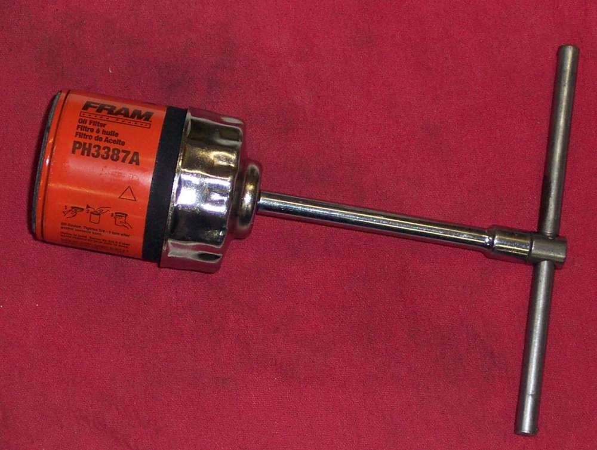
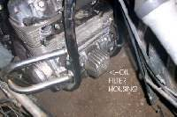

Oil drips or weeps from the spin-on filter, or from the cover or bolt of a paper filter housing. This often shows up soon after a filter change.
Is it safe to ride?
Do not ride. A filter can leak fast or fail completely. A dry engine is quickly destroyed.
Quick checks first
- Check the oil level (bike upright).
- Wipe the filter and engine clean, run the engine for a minute, and see exactly where the oil appears.
- Look at the filter can for dents.
Diagnose it step by step
1Spin-on filter: is the leak at the rubber ring against the engine?
- Yes: the filter is either too loose or too tight, or the old ring is stuck on the engine. Remove the filter and look. Clean the seat, wet the new ring with oil, and refit as in Change a spin-on or paper oil filter.
- No: go to step 2.
2Is the can crushed or badly dented?
- Yes, badly: replace the filter. A small dent is usually harmless.
- No: go to step 3.
3Paper filter in a housing: is oil leaking from the cover joint or the centre bolt?
- Yes: the O-ring may be old, pinched or missing, or the bolt torque is wrong. Cover bolts are often over-tightened. Replace the O-ring and tighten with a torque wrench to the manual value.
- Check the large thin washer (spring seat) is in place.
4Is oil coming from the drain plug or oil lines instead?
- Yes: see Oil leaking from the drain plug and Trace an oil leak.
Causes, most likely first
| Cause | How to confirm | Fix |
|---|---|---|
| Old ring left on the engine | Leak at the seat, two rings seen | Remove, clean the seat, refit |
| Filter over-tightened | Ring squashed or out of shape | New filter, correct turn |
| Filter too loose | Can turns by hand | Tighten as the manual says |
| Crushed can | Badly dented sides | New filter |
| Cover O-ring damaged or missing | Oil at the cover joint | New O-ring, correct torque |
| Cover bolt over-tightened | Cover bent or bolt thread damaged | Replace the O-ring, torque to the manual value |
An over-tight filter can distort its rubber ring, causing a leak or even complete failure of the filter.